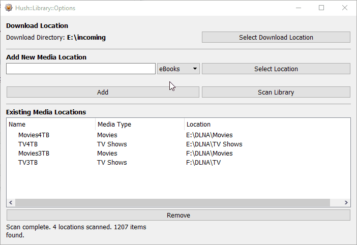

The recommended thing to configure first is the location where you store your media while it is downloaded and after it is downloaded.
The above animation shows how to configure the incoming directory, add and remove a media location.
A media location is comprised of 3 elements: 1. a name, 2. a media type, 3. a location on a storage drive.
You can use any name you like. Choosing the appropriate content type for a media location enables Hush to automatically move new content from the incoming location to where you want it to be stored in your existing (or new) media library. The location should be the top-level of where you store a type of content. For example, a TV Shows content type location would be the folder that holds all the folders for each TV show. You wouldn't make a media location for each TV show you have or want. Hush will deal with TV show names and season folders.
Hush tries to automatically detect what the media type is of any file it is downloading. It will automatically assign a downloading file a media type it thinks is correct, otherwise it will be categorized as "Other".
The Movie media type will allow Hush to automatically move freshly downloaded movies into a media location you have tagged as Movie media type. Hush does not support seperate folders for each movie. It only supports placing all movie files into a single movies folder.
The TV Shows media type allows Hush to automatically move freshly downloaded TV show episodes into a media location you have tagged as TV Shows media type. Hush supports the "Show Name/Season 00" folder format and only supports "S00E00" format for seasons and episodes in tv show filenames.
The Scan Library button will manually trigger a scan of all the entries in the Existing Media Locations list. The library scan builds background data that lets Hush know what media you already have. A library scan is performed at KVIrc startup. The library scan can cause KVIrc to temporarily "freeze" (aka Not Responding) but this is normal, especially if you have a large media collection or if your media is located on a USB drive that may go to sleep or needs to power up after a period of inactivity.
The Remove button will remove a selected item from the Existing Media Locations list.
The status area of this window will show information about what the library scan found in your configured locations.